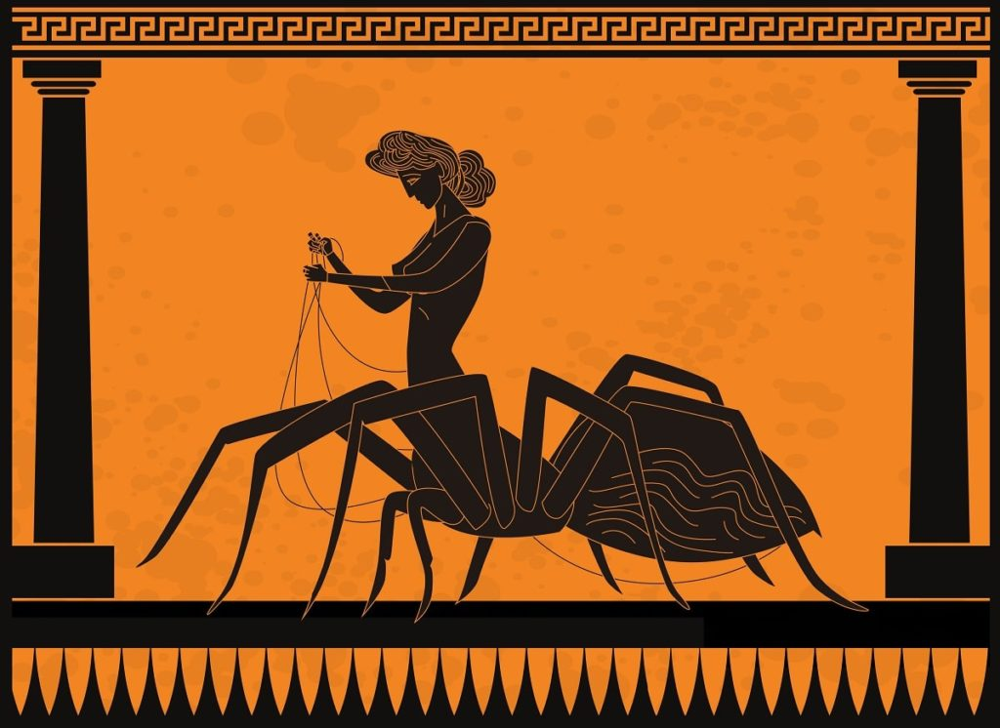
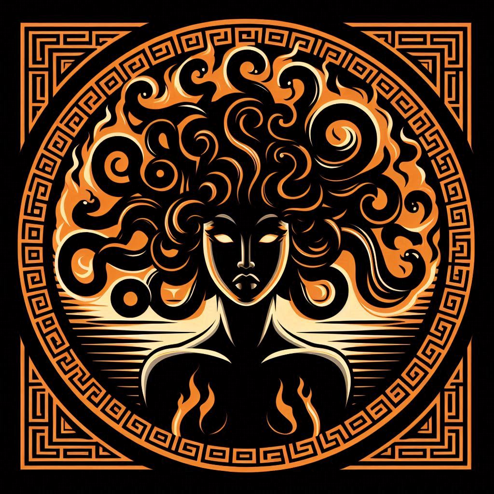

Atena, na mitologia grega, é a deusa da sabedoria, da guerra estratégica, da justiça e das artes. Filha de Zeus e Métis, nasceu diretamente da cabeça de Zeus já adulta e armada, após ele engolir sua mãe para evitar que um filho poderoso o destronasse. Atena é uma das deusas virgens e é conhecida por sua inteligência, coragem e habilidades de liderança. Ela também é patrona de Atenas, cidade que recebeu seu nome após vencer Poseidon em uma disputa pelo seu domínio, oferecendo a oliveira, símbolo de paz e prosperidade. Representa o equilíbrio entre força e sabedoria e é frequentemente associada à coruja e ao escudo com a cabeça de Medusa (égide).
O mito da transformação de Aracne envolve a jovem mortal Aracne, uma talentosa tecelã, que desafiou a deusa Atena para uma competição de tecelagem. Aracne era famosa por sua habilidade, mas sua arrogância a levou a declarar que tecia melhor que a própria deusa. Atena, disfarçada de velha, advertiu Aracne para que respeitasse os deuses, mas Aracne manteve seu desafio. A deusa aceitou a competição, e ambas teceram obras impressionantes. Atena criou uma tapeçaria mostrando os deuses em sua glória, enquanto Aracne teceu cenas que expunham as falhas e erros dos deuses. Embora a obra de Aracne fosse impecável, Atena ficou furiosa com a insolência da jovem. Em retaliação , rasgou a tapeçaria de Aracne e a transformou em uma aranha, condenando-a a tecer por toda a eternidade. O mito explica a origem das aranhas e seu eterno hábito de tecer teias.
O mito de Medusa pode ser interpretado como uma reflexão sobre a beleza e suas consequências. Medusa, antes de sua transformação, era um símbolo de beleza que atraiu a atenção de deuses e mortais. Sua transformação em Górgona, por sua vez, representa a maneira como a beleza pode se tornar uma maldição. A ira de Atena também reflete temas de moralidade e a vigilância das divindades sobre a conduta humana. Nos tempos modernos, Medusa é frequentemente reinterpretada como uma figura empoderada. Sua história é vista como um símbolo de resistência contra a opressão e a objetificação. Ela representa as consequências de ser mal interpretada e estigmatizada, desafiando as narrativas que a rotulam apenas como um monstro.
